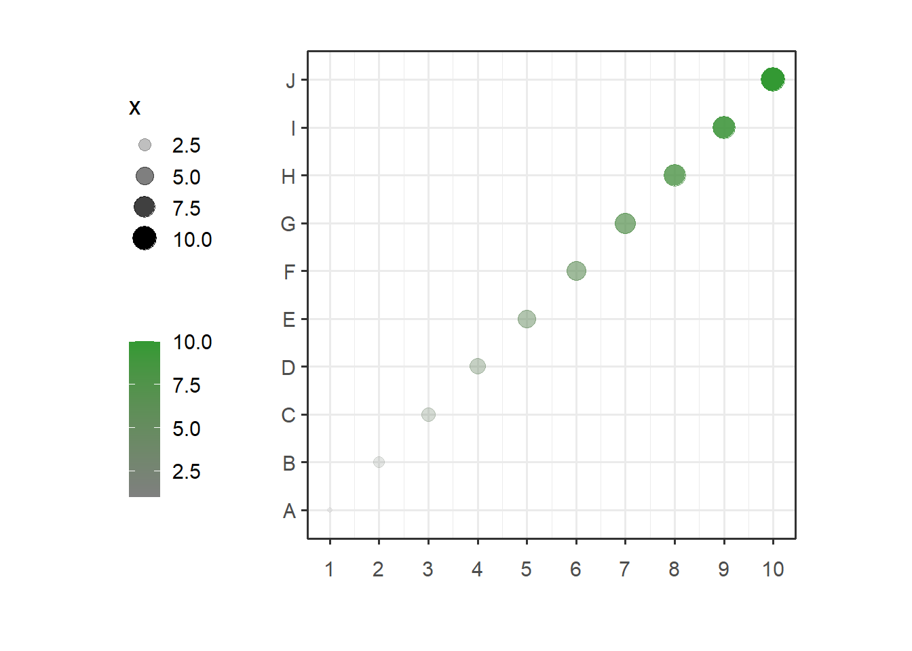
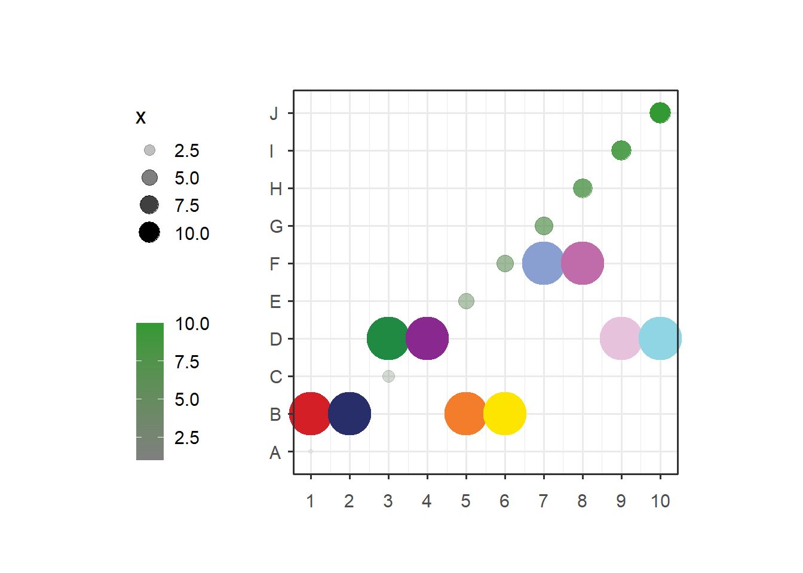
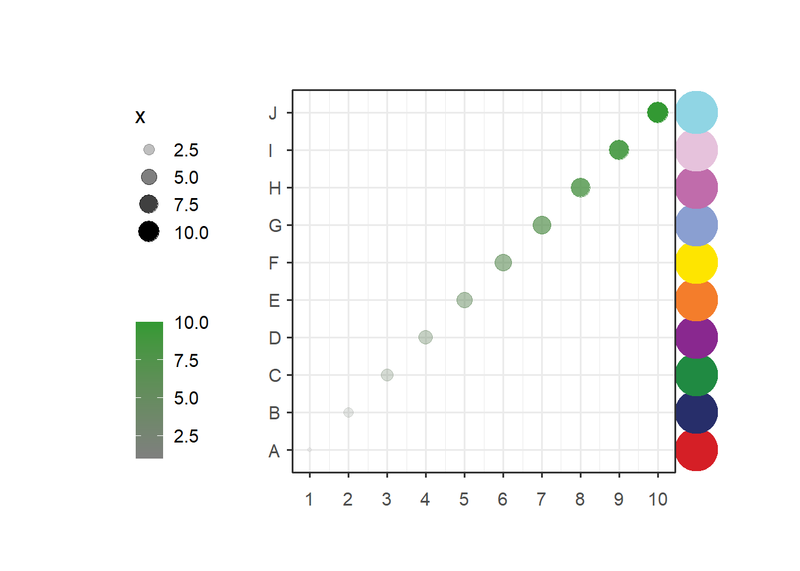
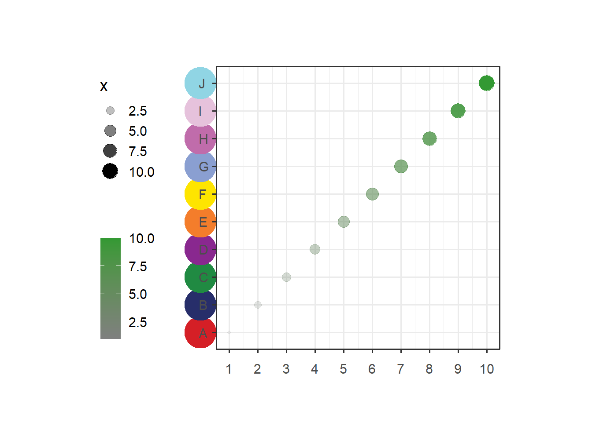
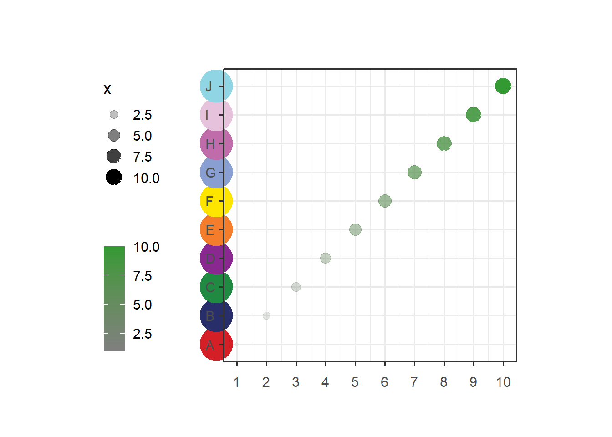
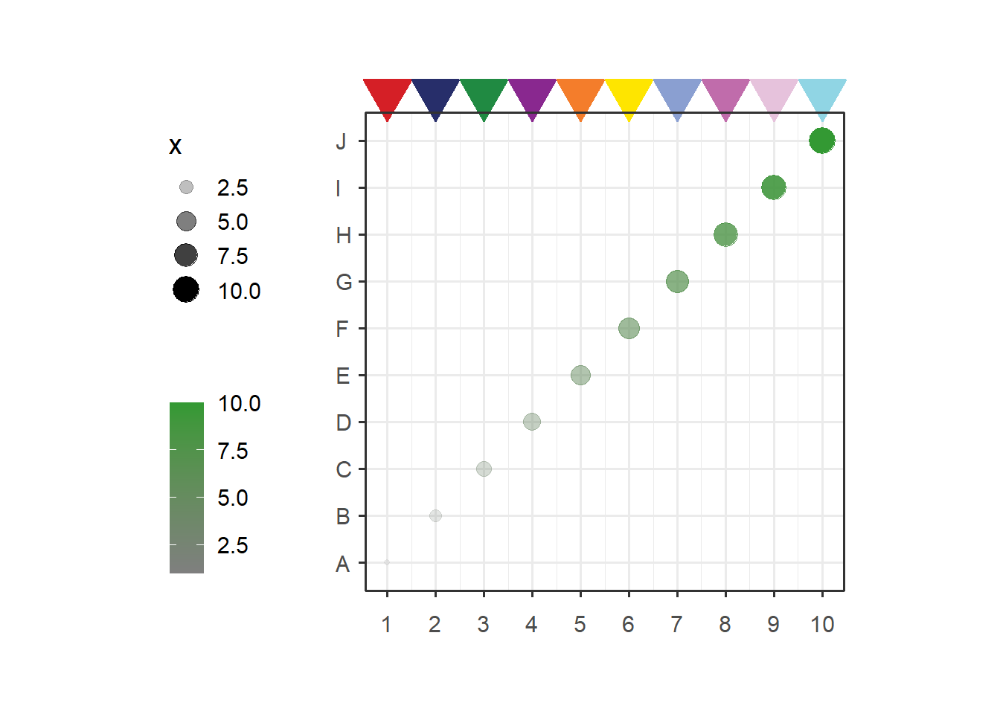
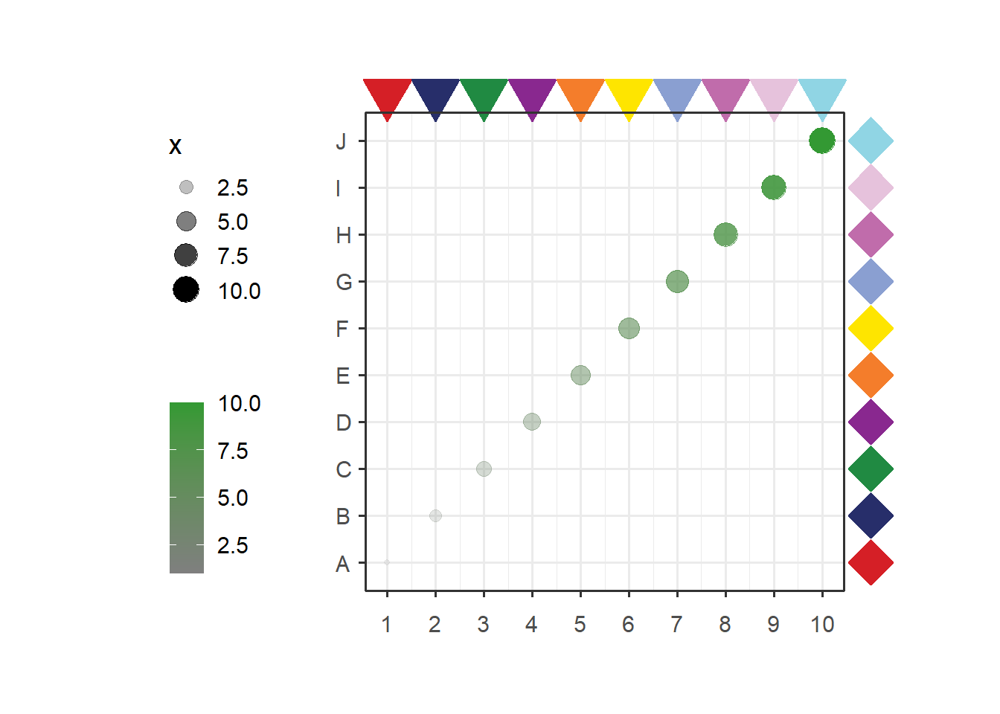

Chapter 4 annoPoint
This function can be used to add some points annotations beside the plot or in plot.
4.1 test data
Let’s make a test data:
library(jjAnno)
library(ggplot2)## Warning: 程辑包'ggplot2'是用R版本4.1.3 来建造的df <- data.frame(x = 1:10,y = sample(1:10,10),
x1 = LETTERS[1:10])Make a simple plot:
library (ggplot2)
p <-
ggplot(df, aes(x,x1)) +
geom_point(aes(size = x,color = x,alpha = x)) +
theme_bw(base_size = 14) +
scale_x_continuous(breaks = seq(1,10,1)) +
# scale_y_continuous(breaks = seq(1,10,1)) +
scale_color_gradient(low = 'grey50',high = '#339933',name = '') +
coord_cartesian(clip = 'off') +
theme(aspect.ratio = 1,
plot.margin = margin(t = 1,r = 1,b = 1,l = 1,unit = 'cm'),
axis.text.x = element_text(vjust = unit(-1.5,'native')),
legend.position = 'left') +
xlab('') + ylab('')
p
Or we can use test data in this package:
data(p)4.2 annotate plot
Now we can use annoPoint to add points in our plot.
Default is the top position:
# default plot
annoPoint(object = p,
annoPos = 'top',
xPosition = c(1:10))## [1] "This palatte have 20 colors!"
We can define multiple yPosition:
# specify yPosition
annoPoint(object = p,
annoPos = 'top',
xPosition = c(1:10),
yPosition = rep(c(2,4,2,6,4),each = 2))## [1] "This palatte have 20 colors!"
Add to right:
# add right
annoPoint(object = p,
annoPos = 'right',
yPosition = c(1:10))## [1] "This palatte have 20 colors!"
Add to left:
# left
annoPoint(object = p,
annoPos = 'left',
yPosition = c(1:10))## [1] "This palatte have 20 colors!"
We can supply xPosition to ajust a suitable position:
# supply xPosition to ajust
annoPoint(object = p,
annoPos = 'right',
yPosition = c(1:10),
xPosition = 0.3)## [1] "This palatte have 20 colors!"
Change point size and shape:
# change point size and shape
annoPoint(object = p,
annoPos = 'top',
xPosition = c(1:10),
ptSize = 2,
ptShape = 25)## [1] "This palatte have 20 colors!"
You can also add multiple annotations:
# add multiple annotations
p1 <- annoPoint(object = p,
annoPos = 'top',
xPosition = c(1:10),
ptSize = 2,
ptShape = 25)## [1] "This palatte have 20 colors!"annoPoint(object = p1,
annoPos = 'right',
yPosition = c(1:10),
ptSize = 2,
ptShape = 23)## [1] "This palatte have 20 colors!"